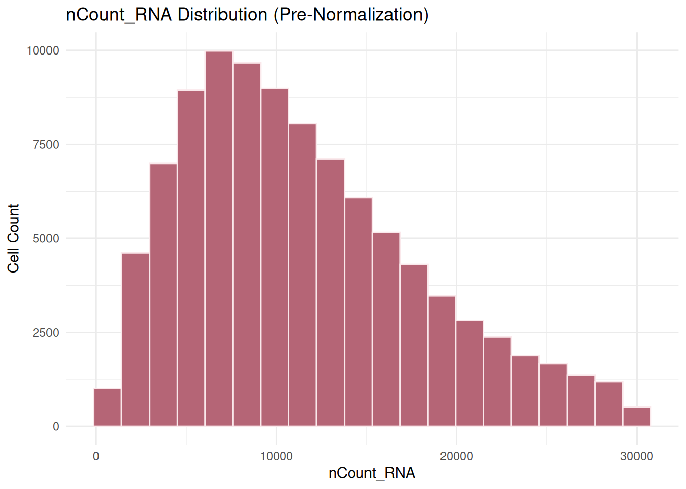
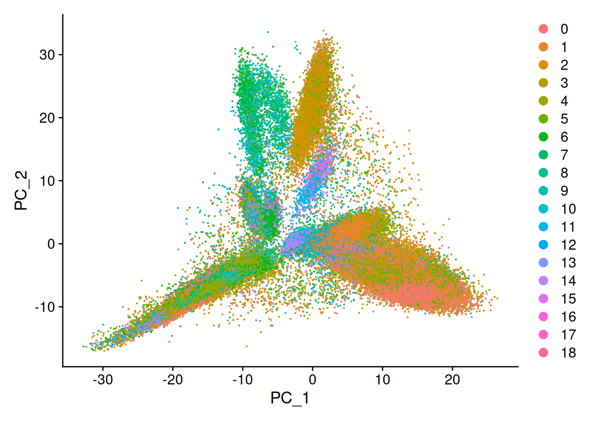
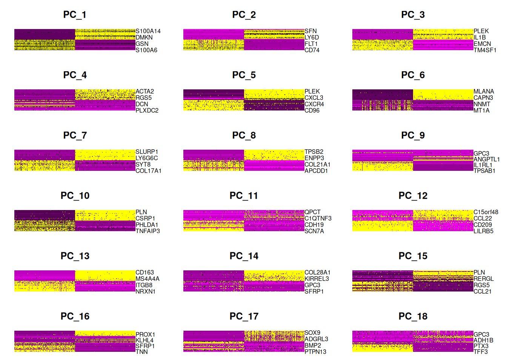
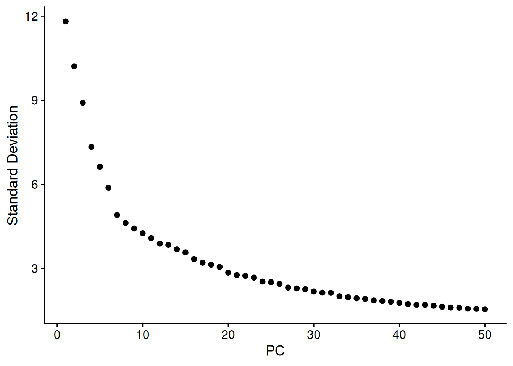
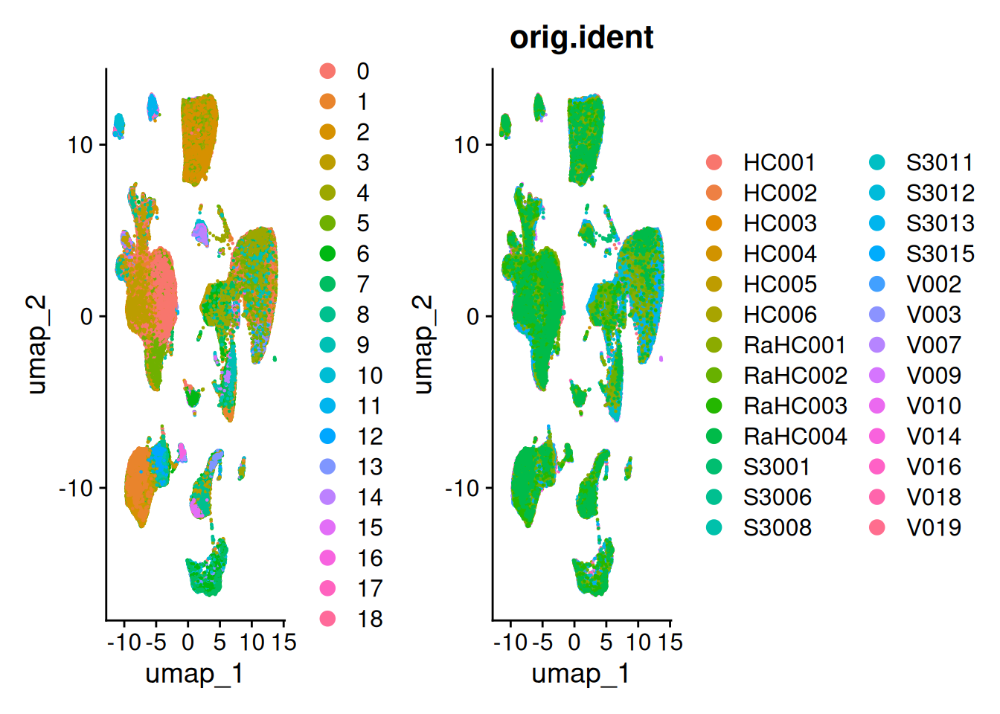
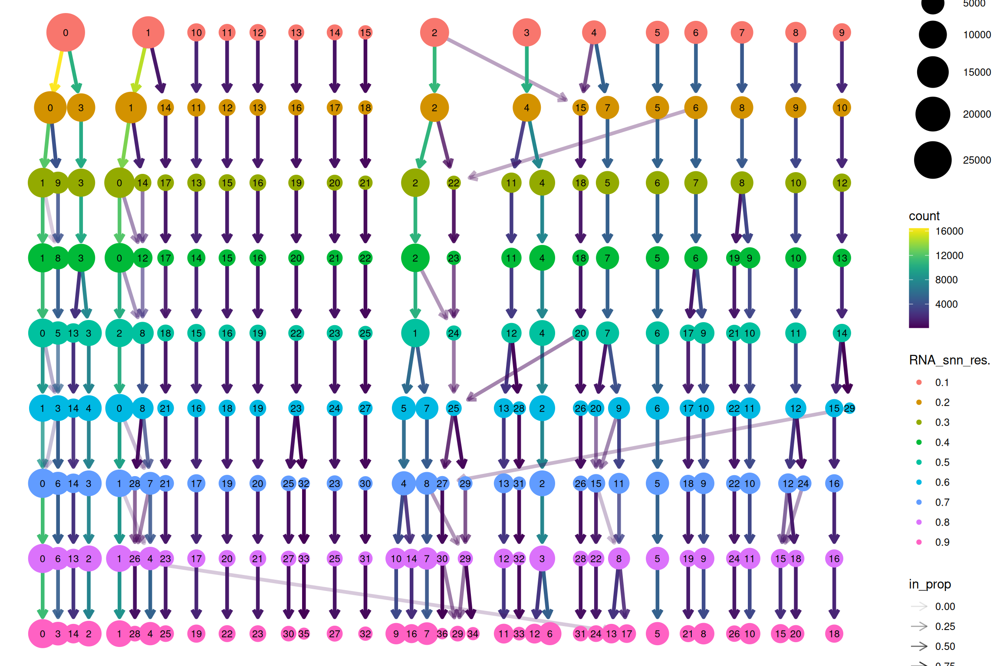
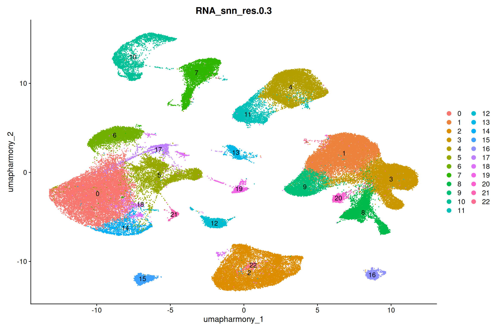
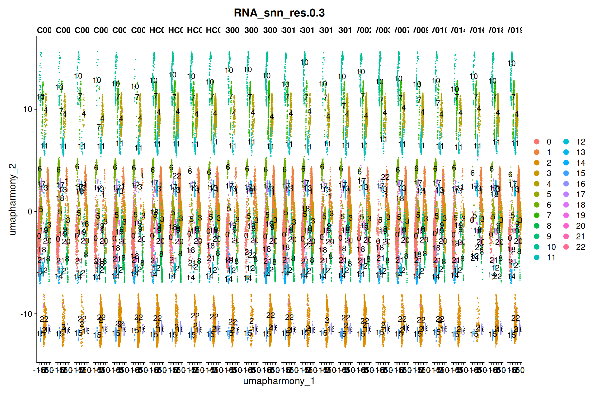

01_QC2
YasmineIlli
2026-07-17
Last updated: 2026-07-22
Checks: 7 0
Knit directory: SingleCell_skin/
This reproducible R Markdown analysis was created with workflowr (version 1.7.2). The Checks tab describes the reproducibility checks that were applied when the results were created. The Past versions tab lists the development history.
Great! Since the R Markdown file has been committed to the Git repository, you know the exact version of the code that produced these results.
Great job! The global environment was empty. Objects defined in the global environment can affect the analysis in your R Markdown file in unknown ways. For reproduciblity it’s best to always run the code in an empty environment.
The command set.seed(20260714) was run prior to running
the code in the R Markdown file. Setting a seed ensures that any results
that rely on randomness, e.g. subsampling or permutations, are
reproducible.
Great job! Recording the operating system, R version, and package versions is critical for reproducibility.
Nice! There were no cached chunks for this analysis, so you can be confident that you successfully produced the results during this run.
Great job! Using relative paths to the files within your workflowr project makes it easier to run your code on other machines.
Great! You are using Git for version control. Tracking code development and connecting the code version to the results is critical for reproducibility.
The results in this page were generated with repository version 5313c3e. See the Past versions tab to see a history of the changes made to the R Markdown and HTML files.
Note that you need to be careful to ensure that all relevant files for
the analysis have been committed to Git prior to generating the results
(you can use wflow_publish or
wflow_git_commit). workflowr only checks the R Markdown
file, but you know if there are other scripts or data files that it
depends on. Below is the status of the Git repository when the results
were generated:
Ignored files:
Ignored: .RData
Ignored: .Rhistory
Ignored: .Rproj.user/
Ignored: analysis/figure/
Ignored: analysis/output/
Ignored: output/01_QC/
Untracked files:
Untracked: renv.lock
Untracked: renv/
Unstaged changes:
Modified: .Rprofile
Modified: .gitignore
Note that any generated files, e.g. HTML, png, CSS, etc., are not included in this status report because it is ok for generated content to have uncommitted changes.
These are the previous versions of the repository in which changes were
made to the R Markdown (analysis/01_QC2.Rmd) and HTML
(docs/01_QC2.html) files. If you’ve configured a remote Git
repository (see ?wflow_git_remote), click on the hyperlinks
in the table below to view the files as they were in that past version.
| File | Version | Author | Date | Message |
|---|---|---|---|---|
| Rmd | 5313c3e | YasmineIlli | 2026-07-22 | wflow_publish("analysis/01_QC2.Rmd") |
| Rmd | fb987de | YasmineIlli | 2026-07-21 | wflow_publish("analysis/01_QC2.Rmd") |
(adapted from Lumeng Li’s code)
Setup
library(Seurat)
library(tidyverse)
library(here)
library(clustree)
library(harmony)
library(patchwork)
library(presto)
library(dittoSeq)# Setup output directories
data_output_directory <- here("output/01_QC/data/QC2/")
plots_output_directory <- here("output/01_QC/plots/QC2/")
RObjects_output_directory <- here("output/01_QC/RObjects/QC2/")# Plot settings
theme_set(theme_classic())
# Color palette
pal <- c(
blue = "#015EA8",
rose = "#B56576",
blush = "#FAE8EB",
navy = "#0A014F",
brown = "#3F220F"
)
# Group colours (4 groups: HC, RaHC, S3, V)
group_cols <- c(V = "#015EA8", RaHC = "#B56576", S = "#3F220F", HC = "#0A014F")# Load data
MergedObject <- readRDS(here("output/01_QC/RObjects/QC1/01_QC1_MergedObject.rds"))Standard pipeline
First check the distribution of nCount_RNA before and after normalization:
set.seed(123)
# Reusable histogram function for nCount_RNA distributions
plot_ncount_hist <- function(seurat_obj, plot_title) {
ggplot(
seurat_obj[[]],
aes(x = nCount_RNA)
) +
geom_histogram(
bins = 20,
fill = "#B56576",
color = "#FAE8EB"
) +
theme_minimal() +
labs(
title = plot_title,
x = "nCount_RNA",
y = "Cell Count"
)
}
# Check median library size before normalization
paste("Median library size:", median(MergedObject$nCount_RNA))[1] "Median library size: 10306"# Plot nCount_RNA distribution before normalization
hist_pre <- plot_ncount_hist(
MergedObject,
"nCount_RNA Distribution (Pre-Normalization)"
)
hist_pre
ggsave(file = file.path(plots_output_directory, "01_QC2_HistogramPreNormalization.png"),
plot = hist_pre, width = 6, height = 4, dpi = 300)
# Normalize using median library size as the scale factor
MergedObject <- NormalizeData(
MergedObject,
scale.factor = median(MergedObject$nCount_RNA)
)
# Plot nCount_RNA distribution after normalization
# (distribution is unchanged here since scale.factor was already set to the median)
hist_post <- plot_ncount_hist(
MergedObject,
"nCount_RNA Distribution (Post-Normalization)"
)
hist_post# ggsave(file.path(plots_output_directory, "01_QC2_HistogramPostNormalization.png"),
# plot = hist_post, width = 6, height = 4, dpi = 300)The histogram is exactly the same because NormalizeData() doesn’t change the nCount_RNA. We need to use “data” layer instead:
# Recompute total counts from the normalized layer
norm_counts <- colSums(
LayerData(MergedObject, layer = "data")
)
# Add to metadata for plotting
MergedObject$nCount_norm <- norm_counts
# Plot normalized totals
hist_norm <- ggplot(
MergedObject[[]],
aes(x = nCount_norm)
) +
geom_histogram(
bins = 20,
fill = "#B56576",
color = "#FAE8EB"
) +
theme_minimal() +
labs(
title = "Recomputed Totals from Normalized Layer",
x = "Sum of log-normalized counts",
y = "Cell Count"
)
hist_norm
ggsave(file.path(plots_output_directory, "01_QC2_HistogramPostNormalization.png"),
plot = hist_post, width = 6, height = 4, dpi = 300)# Highly variable genes
set.seed(123)
# Identify top 2000 variable features using the VST method
MergedObject <- FindVariableFeatures(
MergedObject,
selection.method = "vst",
nfeatures = 2000
)
# Pull top 10 most variable genes
top10 <- head(VariableFeatures(MergedObject), 10)
top10 [1] "CXCL8" "IL1B" "DCT" "SELE" "CCL21" "CCL3" "G0S2" "KRT17" "CCL4"
[10] "CCL19"# Plot variable features and label the top 10
vf_plot <- VariableFeaturePlot(MergedObject)
vf_plot_labeled <- LabelPoints(
plot = vf_plot,
points = top10,
repel = TRUE,
min.segment.length = 0,
segment.color = "#3F220F",
segment.size = 0.3,
box.padding = 0.8,
max.overlaps = Inf
)
vf_plot_labeled
ggsave(filename = file.path(plots_output_directory, "01_QC2_VariableFeatures.png"),
plot = vf_plot_labeled, width = 6, height = 4, dpi = 300)# Scale Data
set.seed(123)
MergedObject <- ScaleData(MergedObject,
features = rownames(MergedObject))# PCA
set.seed(123)
MergedObject <- RunPCA(MergedObject,
features = VariableFeatures(object = MergedObject),
approx = FALSE, # to allow reproducibility
npcs = 50,
verbose = FALSE)
# not important, more to be able to remove low quality cells later
DimPlot(MergedObject, reduction = "pca")
DimHeatmap(MergedObject, dims = 1:18, cells = 500, balanced = TRUE)
# ElbowPlot
elbowPlot <- ElbowPlot(MergedObject, ndims = 50, reduction = "pca")
elbowPlot
ggsave(filename = file.path(plots_output_directory, "01_QC2_ElbowPlot.png"),
plot = elbowPlot, width = 6, height = 4, dpi = 300)# Automatic PC selection
# Extract PC standard deviations
stdv <- MergedObject[["pca"]]@stdev[1:50]
# Percent variation explained by each PC
percent_stdv <- (stdv / sum(stdv)) * 100
cumulative <- cumsum(percent_stdv)
# Cutoff 1: first PC where cumulative variation exceeds 90% and individual PC explains < 5%
co1 <- which(cumulative > 90 & percent_stdv < 5)[1]
# Cutoff 2: last PC where the drop in variation to the next PC is > 0.05%
co2 <- sort(
which(diff(percent_stdv) < -0.05),
decreasing = TRUE
)[1] + 1
co1[1] 40co2[1] 33# Use the more conservative of the two cutoffs
selected_dim <- min(co1, co2)
paste("selected dimenstions:", selected_dim)[1] "selected dimenstions: 33"# UMAP
set.seed(123)
# Run UMAP on the selected PCs
MergedObject <- RunUMAP(
MergedObject,
dims = 1:selected_dim
)
# UMAP before integration: unlabeled vs. coloured by sample
umap_plain <- DimPlot(
MergedObject,
reduction = "umap"
)
umap_by_sample <- DimPlot(
MergedObject,
reduction = "umap",
group.by = "orig.ident"
)
umap_pre_integration <- umap_plain | umap_by_sample
umap_pre_integration
ggsave(filename = file.path(plots_output_directory, "01_QC2_umap_pre_integration.png"),
plot = umap_pre_integration, width = 12, height = 5, dpi = 300)Harmony Integration
set.seed(123)
# Run Harmony
MergedObject <- IntegrateLayers(
object = MergedObject,
method = HarmonyIntegration,
orig.reduction = "pca",
new.reduction = "harmony",
group.by.vars = "orig.ident",
verbose = FALSE
)
# Check if harmony worked
Reductions(MergedObject)[1] "pca" "umap" "harmony"head(MergedObject@meta.data) orig.ident nCount_RNA nFeature_RNA percent.mt
HC001_AAACCCAAGTTATGGA-1 HC001 6083 2257 18.411968
HC001_AAACCCACAATGAACA-1 HC001 9596 2841 7.690704
HC001_AAACCCACACCACTGG-1 HC001 13198 3137 17.608729
HC001_AAACCCACACTTACAG-1 HC001 11966 3714 7.521310
HC001_AAACCCAGTGGATTTC-1 HC001 20340 3928 11.607670
HC001_AAACCCATCCTAAACG-1 HC001 9317 2735 6.053451
percent.hb percent.ribo RNA_snn_res.0.3
HC001_AAACCCAAGTTATGGA-1 0.000000000 9.156666 1
HC001_AAACCCACAATGAACA-1 0.000000000 12.932472 1
HC001_AAACCCACACCACTGG-1 0.007576906 26.466131 0
HC001_AAACCCACACTTACAG-1 0.008357012 8.423868 8
HC001_AAACCCAGTGGATTTC-1 0.009832842 30.776794 0
HC001_AAACCCATCCTAAACG-1 0.010733069 19.437587 1
seurat_clusters doublet nCount_norm
HC001_AAACCCAAGTTATGGA-1 1 Singlet 3052.648
HC001_AAACCCACAATGAACA-1 1 Singlet 3294.847
HC001_AAACCCACACCACTGG-1 0 Singlet 3040.490
HC001_AAACCCACACTTACAG-1 8 Doublet 3843.134
HC001_AAACCCAGTGGATTTC-1 0 Singlet 3056.211
HC001_AAACCCATCCTAAACG-1 1 Singlet 3176.429# UMAP after Harmony
set.seed(123)
# Run UMAP again
MergedObject <- RunUMAP(MergedObject,
reduction = "harmony",
dims = 1:selected_dim,
reduction.name = "umap_harmony")
# Post-integration UMAP: unlabeled vs. coloured by sample
umap_harmony_plain <- DimPlot(
MergedObject,
reduction = "umap_harmony"
)
umap_harmony_by_sample <- DimPlot(
MergedObject,
reduction = "umap_harmony",
group.by = "orig.ident"
)
umap_post_integration <- umap_harmony_plain | umap_harmony_by_sample
umap_post_integration
ggsave(
filename = file.path(plots_output_directory, "01_QC2_umap_post_integration.png"),
plot = umap_post_integration, width = 12, height = 5, dpi = 300
)Clustering
set.seed(123)
# Combine counts layers of each sample to one
MergedObject[["RNA"]] <- JoinLayers(MergedObject[["RNA"]])
MergedObject <- FindNeighbors(MergedObject,
reduction = "harmony",
dims = 1:selected_dim)
MergedObject <- FindClusters(MergedObject,
resolution = seq(0.1, 0.9, by = 0.1))Modularity Optimizer version 1.3.0 by Ludo Waltman and Nees Jan van Eck
Number of nodes: 96184
Number of edges: 3409793
Running Louvain algorithm...
Maximum modularity in 10 random starts: 0.9823
Number of communities: 16
Elapsed time: 46 seconds
Modularity Optimizer version 1.3.0 by Ludo Waltman and Nees Jan van Eck
Number of nodes: 96184
Number of edges: 3409793
Running Louvain algorithm...
Maximum modularity in 10 random starts: 0.9723
Number of communities: 19
Elapsed time: 47 seconds
Modularity Optimizer version 1.3.0 by Ludo Waltman and Nees Jan van Eck
Number of nodes: 96184
Number of edges: 3409793
Running Louvain algorithm...
Maximum modularity in 10 random starts: 0.9637
Number of communities: 23
Elapsed time: 46 seconds
Modularity Optimizer version 1.3.0 by Ludo Waltman and Nees Jan van Eck
Number of nodes: 96184
Number of edges: 3409793
Running Louvain algorithm...
Maximum modularity in 10 random starts: 0.9564
Number of communities: 24
Elapsed time: 49 seconds
Modularity Optimizer version 1.3.0 by Ludo Waltman and Nees Jan van Eck
Number of nodes: 96184
Number of edges: 3409793
Running Louvain algorithm...
Maximum modularity in 10 random starts: 0.9501
Number of communities: 26
Elapsed time: 45 seconds
Modularity Optimizer version 1.3.0 by Ludo Waltman and Nees Jan van Eck
Number of nodes: 96184
Number of edges: 3409793
Running Louvain algorithm...
Maximum modularity in 10 random starts: 0.9445
Number of communities: 30
Elapsed time: 41 seconds
Modularity Optimizer version 1.3.0 by Ludo Waltman and Nees Jan van Eck
Number of nodes: 96184
Number of edges: 3409793
Running Louvain algorithm...
Maximum modularity in 10 random starts: 0.9394
Number of communities: 33
Elapsed time: 42 seconds
Modularity Optimizer version 1.3.0 by Ludo Waltman and Nees Jan van Eck
Number of nodes: 96184
Number of edges: 3409793
Running Louvain algorithm...
Maximum modularity in 10 random starts: 0.9340
Number of communities: 34
Elapsed time: 51 seconds
Modularity Optimizer version 1.3.0 by Ludo Waltman and Nees Jan van Eck
Number of nodes: 96184
Number of edges: 3409793
Running Louvain algorithm...
Maximum modularity in 10 random starts: 0.9295
Number of communities: 37
Elapsed time: 42 secondshead(MergedObject@meta.data) orig.ident nCount_RNA nFeature_RNA percent.mt
HC001_AAACCCAAGTTATGGA-1 HC001 6083 2257 18.411968
HC001_AAACCCACAATGAACA-1 HC001 9596 2841 7.690704
HC001_AAACCCACACCACTGG-1 HC001 13198 3137 17.608729
HC001_AAACCCACACTTACAG-1 HC001 11966 3714 7.521310
HC001_AAACCCAGTGGATTTC-1 HC001 20340 3928 11.607670
HC001_AAACCCATCCTAAACG-1 HC001 9317 2735 6.053451
percent.hb percent.ribo RNA_snn_res.0.3
HC001_AAACCCAAGTTATGGA-1 0.000000000 9.156666 20
HC001_AAACCCACAATGAACA-1 0.000000000 12.932472 3
HC001_AAACCCACACCACTGG-1 0.007576906 26.466131 0
HC001_AAACCCACACTTACAG-1 0.008357012 8.423868 12
HC001_AAACCCAGTGGATTTC-1 0.009832842 30.776794 0
HC001_AAACCCATCCTAAACG-1 0.010733069 19.437587 3
seurat_clusters doublet nCount_norm RNA_snn_res.0.1
HC001_AAACCCAAGTTATGGA-1 27 Singlet 3052.648 14
HC001_AAACCCACAATGAACA-1 2 Singlet 3294.847 0
HC001_AAACCCACACCACTGG-1 1 Singlet 3040.490 1
HC001_AAACCCACACTTACAG-1 18 Doublet 3843.134 9
HC001_AAACCCAGTGGATTTC-1 4 Singlet 3056.211 1
HC001_AAACCCATCCTAAACG-1 14 Singlet 3176.429 0
RNA_snn_res.0.2 RNA_snn_res.0.4 RNA_snn_res.0.5
HC001_AAACCCAAGTTATGGA-1 17 21 23
HC001_AAACCCACAATGAACA-1 3 3 3
HC001_AAACCCACACCACTGG-1 1 0 2
HC001_AAACCCACACTTACAG-1 10 13 14
HC001_AAACCCAGTGGATTTC-1 1 0 8
HC001_AAACCCATCCTAAACG-1 3 3 13
RNA_snn_res.0.6 RNA_snn_res.0.7 RNA_snn_res.0.8
HC001_AAACCCAAGTTATGGA-1 24 23 25
HC001_AAACCCACAATGAACA-1 4 3 2
HC001_AAACCCACACCACTGG-1 0 1 1
HC001_AAACCCACACTTACAG-1 15 16 16
HC001_AAACCCAGTGGATTTC-1 8 7 4
HC001_AAACCCATCCTAAACG-1 14 14 13
RNA_snn_res.0.9
HC001_AAACCCAAGTTATGGA-1 27
HC001_AAACCCACAATGAACA-1 2
HC001_AAACCCACACCACTGG-1 1
HC001_AAACCCACACTTACAG-1 18
HC001_AAACCCAGTGGATTTC-1 4
HC001_AAACCCATCCTAAACG-1 14set.seed(123)
clustree_plot <- clustree(MergedObject@meta.data[
, grep("RNA_snn_res",
colnames(MergedObject@meta.data))
], prefix = "RNA_snn_res.")
clustree_plot
ggsave(filename = file.path(plots_output_directory, "01_QC2_clustree.png"),
plot = clustree_plot, width = 14, height = 10, dpi = 300)set.seed(123)
umap_res_sweep <- DimPlot(
MergedObject,
reduction = "umap_harmony",
group.by = c(
"RNA_snn_res.0.1",
"RNA_snn_res.0.2",
"RNA_snn_res.0.3",
"RNA_snn_res.0.4",
"RNA_snn_res.0.5",
"RNA_snn_res.0.6",
"RNA_snn_res.0.7",
"RNA_snn_res.0.8",
"RNA_snn_res.0.9"
),
ncol = 3
)
umap_res_sweep
ggsave(
filename = file.path(plots_output_directory, "01_QC2_UMAPdifferentResolutions.png"),
plot = umap_res_sweep,
width = 15,
height = 15,
dpi = 300
)set.seed(123)
# All resolution columns to plot
resolutions <- grep(
"RNA_snn_res",
colnames(MergedObject@meta.data),
value = TRUE
)
# Stacked proportion bar of orig.ident within each cluster, one panel per resolution
sample_prop_plots <- lapply(resolutions, function(res) {
MergedObject@meta.data %>%
count(
cluster = .data[[res]],
orig.ident
) %>%
group_by(cluster) %>%
mutate(proportion = n / sum(n)) %>%
ungroup() %>%
ggplot(
aes(x = cluster, y = proportion, fill = orig.ident)
) +
geom_col(color = "black", linewidth = 0.2) +
scale_y_continuous(labels = scales::percent) +
theme_minimal() +
labs(title = res, x = NULL, y = "Proportion of cells", fill = "Sample")
})
sample_prop_by_cluster <- wrap_plots(sample_prop_plots, ncol = 2) +
plot_layout(guides = "collect")
sample_prop_by_cluster
ggsave(
filename = file.path(plots_output_directory, "01_QC2_SamplePropInClusters.png"),
plot = sample_prop_by_cluster,
width = 18,
height = 16,
dpi = 300
)Double proportion plots
We are only going to plot the doublet proportion per cluster to see if there are clusters that should be removed.
# Doublet fraction per cluster at the chosen resolution
doublet_by_cluster <- MergedObject@meta.data %>%
group_by(
cluster = .data[["RNA_snn_res.0.3"]],
doublet
) %>%
summarise(
n = n(),
.groups = "drop"
) %>%
group_by(cluster) %>%
mutate(
proportion = n / sum(n)
) %>%
ungroup()
doublet_by_cluster# A tibble: 46 × 4
cluster doublet n proportion
<fct> <chr> <int> <dbl>
1 0 Doublet 87 0.00658
2 0 Singlet 13140 0.993
3 1 Doublet 49 0.00401
4 1 Singlet 12174 0.996
5 2 Doublet 920 0.0857
6 2 Singlet 9809 0.914
7 3 Doublet 56 0.00549
8 3 Singlet 10146 0.995
9 4 Doublet 63 0.00826
10 4 Singlet 7561 0.992
# ℹ 36 more rowswrite.csv(
doublet_by_cluster,
file.path(data_output_directory, "01_QC2_doublet.csv"),
row.names = FALSE
)
# Stacked bar: doublet vs singlet composition of each cluster
doublet_composition_plot <- ggplot(
doublet_by_cluster,
aes(
x = cluster,
y = proportion,
fill = doublet
)
) +
geom_col() +
scale_fill_manual(
values = c(
"Singlet" = "#FAE8EB",
"Doublet" = "#B56576"
)
) +
scale_y_continuous(labels = scales::percent) +
theme_minimal() +
labs(
x = "Cluster (res 0.3)",
y = "Proportion of cells",
fill = NULL
)
doublet_composition_plot
ggsave(
filename = file.path(plots_output_directory, "01_QC2_doublet_composition_per_cluster.png"),
plot = doublet_composition_plot,
width = 8,
height = 5,
dpi = 300
)
# Where doublets sit on the UMAP
umap_doublets <- DimPlot(
MergedObject,
reduction = "umap_harmony",
group.by = "doublet",
order = "Doublet", # draw doublets on top so they aren't buried
cols = c(
"Singlet" = "#FAE8EB",
"Doublet" = "#B56576"
)
)
umap_doublets
ggsave(
filename = file.path(plots_output_directory, "01_QC2_umap_doublets.png"),
plot = umap_doublets,
width = 7,
height = 5,
dpi = 300
)Set Resolution
Selected resolution according to expected number of clusters.
MergedObject <- SetIdent(MergedObject,
value = MergedObject$RNA_snn_res.0.3)
head(MergedObject@active.ident)HC001_AAACCCAAGTTATGGA-1 HC001_AAACCCACAATGAACA-1 HC001_AAACCCACACCACTGG-1
20 3 0
HC001_AAACCCACACTTACAG-1 HC001_AAACCCAGTGGATTTC-1 HC001_AAACCCATCCTAAACG-1
12 0 3
Levels: 0 1 2 3 4 5 6 7 8 9 10 11 12 13 14 15 16 17 18 19 20 21 22set.seed(123)
umap_selected_res <- DimPlot(MergedObject,
reduction = "umap_harmony",
group.by = "RNA_snn_res.0.3",
label = TRUE)
umap_selected_res
ggsave(filename = file.path(plots_output_directory, "01_QC2_UMAPselectedRes.png"),
plot = umap_selected_res,
width = 12,
height = 5,
dpi = 300)
# Visualize per sample
umap_selected_res_PerSample <- DimPlot(MergedObject,
reduction = "umap_harmony",
group.by = "RNA_snn_res.0.3",
split.by = "orig.ident",
label = TRUE)
umap_selected_res_PerSample
ggsave(filename = file.path(plots_output_directory, "01_QC2_UMAPselectedRes_perSample.png"),
plot = umap_selected_res_PerSample,
width = 12,
height = 5,
dpi = 300)Find Markers
set.seed(123)
#top 25 marker genes per cluster
MergedObject_Markers <- FindAllMarkers(
object = MergedObject,
only.pos = TRUE,
test.use = "wilcox",
logfc.threshold = 0.25,
min.pct = 0.2,
min.cells.feature = 5,
return.thresh = 0.05
)
top10_by_cluster <- MergedObject_Markers %>%
dplyr::filter(p_val_adj <= 0.05) %>%
dplyr::group_by(cluster) %>%
dplyr::slice_max(order_by = avg_log2FC,
n = 10,
with_ties = TRUE) %>%
dplyr::ungroup() %>%
dplyr::arrange(cluster, dplyr::desc(avg_log2FC))
#get a preview
print(top10_by_cluster, n = 30)# A tibble: 230 × 7
p_val avg_log2FC pct.1 pct.2 p_val_adj cluster gene
<dbl> <dbl> <dbl> <dbl> <dbl> <fct> <chr>
1 0 5.25 0.27 0.008 0 0 CLCA4
2 0 5.03 0.997 0.069 0 0 KRT1
3 0 4.63 0.646 0.029 0 0 CHP2
4 0 4.56 0.265 0.013 0 0 GSTA3
5 0 4.28 0.998 0.276 0 0 KRT10
6 0 4.24 0.995 0.121 0 0 LY6D
7 0 4.14 0.998 0.128 0 0 DMKN
8 0 3.98 0.311 0.021 0 0 FOXN1
9 0 3.96 0.822 0.062 0 0 RHOV
10 0 3.92 0.272 0.018 0 0 MYCL
11 0 5.56 0.554 0.02 0 1 C1QTNF3
12 0 4.97 0.961 0.103 0 1 CCN5
13 0 4.88 0.387 0.012 0 1 CD70
14 0 4.76 0.907 0.101 0 1 PI16
15 0 4.67 0.58 0.036 0 1 PCOLCE2
16 0 4.35 0.299 0.018 0 1 SPAG17
17 0 4.29 0.382 0.024 0 1 CILP
18 0 4.28 0.238 0.014 0 1 LVRN
19 0 4.25 0.852 0.089 0 1 MFAP5
20 0 4.24 0.214 0.012 0 1 GLRB
21 0 8.62 0.43 0.002 0 2 SOX17
22 0 8.40 0.853 0.006 0 2 PLVAP
23 0 8.26 0.962 0.008 0 2 ADGRL4
24 0 8.25 0.618 0.007 0 2 SELE
25 0 8.18 0.709 0.008 0 2 ACKR1
26 0 8.01 0.528 0.006 0 2 CSF3
27 0 7.91 0.38 0.003 0 2 FAM110D
28 0 7.82 0.805 0.009 0 2 TACR1
29 0 7.23 0.489 0.005 0 2 CCL14
30 0 7.18 0.719 0.011 0 2 C2CD4B
# ℹ 200 more rows#make a table
write_csv(top10_by_cluster,
file = file.path(data_output_directory, "01_QC2_top10_by_cluster.csv"))# Top 3 markers per cluster for the dotplot
top3_by_cluster <- MergedObject_Markers %>%
filter(p_val_adj <= 0.05) %>%
group_by(cluster) %>%
top_n(n = 3,
wt = avg_log2FC)
dotplot_top3 <- dittoDotPlot(MergedObject,
vars = unique(top3_by_cluster$gene),
group.by = "RNA_snn_res.0.3",
size = 5)
ggsave(file.path(plots_output_directory,
"01_QC2_DotPlot_Top3VariableGenes.png"),
plot = dotplot_top3,
width = 12,
height = 9,
dpi = 300)top5_by_cluster <- MergedObject_Markers %>%
filter(p_val_adj <= 0.05) %>%
group_by(cluster) %>%
top_n(n = 5,
wt = avg_log2FC)
heatmap_top5 <- DoHeatmap(MergedObject,
features = top5_by_cluster$gene) +
NoLegend()
heatmap_top5
ggsave(file.path(plots_output_directory,
"01_QC2_Heatmap_Top5VariableFeatures.png"),
plot = heatmap_top5,
width = 16,
height = 12,
dpi = 300)Doublet removal
# Counts before removal
Idents(MergedObject) <- MergedObject@meta.data$doublet
table(MergedObject$doublet)
Doublet Singlet
4236 91948 table(MergedObject@meta.data$orig.ident)
HC001 HC002 HC003 HC004 HC005 HC006 RaHC001 RaHC002 RaHC003 RaHC004
3546 2239 1279 1725 5021 2748 7594 7188 3091 4165
S3001 S3006 S3008 S3011 S3012 S3013 S3015 V002 V003 V007
1985 1652 6878 5584 4577 2073 4377 3554 2076 4567
V009 V010 V014 V016 V018 V019
5220 3939 2302 1305 3270 4229 # Save Object before doublet removal
# saveRDS(MergedObject, file.path(RObjects_output_directory,
# "01_QC2_MergedObject_before_doublet_removal.rds"))
# Keep only singlets
MergedObject <- subset(MergedObject,
idents = "Singlet")
table(MergedObject$doublet)
Singlet
91948 table(MergedObject@meta.data$orig.ident)
HC001 HC002 HC003 HC004 HC005 HC006 RaHC001 RaHC002 RaHC003 RaHC004
3394 2143 1225 1651 4793 2634 7253 6867 2953 3981
S3001 S3006 S3008 S3011 S3012 S3013 S3015 V002 V003 V007
1897 1578 6571 5335 4375 1983 4178 3396 1984 4363
V009 V010 V014 V016 V018 V019
4993 3769 2205 1249 3127 4051 saveRDS(
MergedObject,
file.path(RObjects_output_directory, "01_QC2_MergedObject_after_doublet_removal.rds")
)sessionInfo()R version 4.5.2 (2025-10-31)
Platform: x86_64-pc-linux-gnu
Running under: Ubuntu 24.04.3 LTS
Matrix products: default
BLAS: /usr/lib/x86_64-linux-gnu/openblas-pthread/libblas.so.3
LAPACK: /usr/lib/x86_64-linux-gnu/openblas-pthread/libopenblasp-r0.3.26.so; LAPACK version 3.12.0
locale:
[1] LC_CTYPE=en_US.UTF-8 LC_NUMERIC=C
[3] LC_TIME=en_US.UTF-8 LC_COLLATE=en_US.UTF-8
[5] LC_MONETARY=en_US.UTF-8 LC_MESSAGES=en_US.UTF-8
[7] LC_PAPER=en_US.UTF-8 LC_NAME=C
[9] LC_ADDRESS=C LC_TELEPHONE=C
[11] LC_MEASUREMENT=en_US.UTF-8 LC_IDENTIFICATION=C
time zone: Etc/UTC
tzcode source: system (glibc)
attached base packages:
[1] stats graphics grDevices datasets utils methods base
other attached packages:
[1] future_1.70.0 dittoSeq_1.22.0 presto_1.0.0 data.table_1.18.4
[5] patchwork_1.3.2 harmony_2.0.5 Rcpp_1.1.2 clustree_0.5.1
[9] ggraph_2.2.2 here_1.0.2 lubridate_1.9.5 forcats_1.0.1
[13] stringr_1.6.0 dplyr_1.2.1 purrr_1.2.2 readr_2.2.0
[17] tidyr_1.3.2 tibble_3.3.1 ggplot2_4.0.3 tidyverse_2.0.0
[21] Seurat_5.5.1 SeuratObject_5.4.0 sp_2.2-1 workflowr_1.7.2
loaded via a namespace (and not attached):
[1] RcppAnnoy_0.0.23 splines_4.5.2
[3] later_1.4.4 polyclip_1.10-7
[5] fastDummies_1.7.6 lifecycle_1.0.5
[7] rprojroot_2.1.1 vroom_1.7.1
[9] globals_0.19.1 processx_3.8.6
[11] lattice_0.22-7 MASS_7.3-65
[13] backports_1.5.1 magrittr_2.0.4
[15] plotly_4.12.0 sass_0.4.10
[17] rmarkdown_2.30 jquerylib_0.1.4
[19] yaml_2.3.11 httpuv_1.6.16
[21] otel_0.2.0 sctransform_0.4.3
[23] spam_2.11-4 spatstat.sparse_3.2-0
[25] reticulate_1.46.0 cowplot_1.2.0
[27] pbapply_1.7-4 RColorBrewer_1.1-3
[29] abind_1.4-8 Rtsne_0.17
[31] GenomicRanges_1.62.1 BiocGenerics_0.56.0
[33] tweenr_2.0.3 git2r_0.36.2
[35] IRanges_2.44.0 S4Vectors_0.48.0
[37] ggrepel_0.9.8 irlba_2.3.7
[39] listenv_1.0.0 spatstat.utils_3.2-3
[41] pheatmap_1.0.13 goftest_1.2-3
[43] RSpectra_0.16-2 spatstat.random_3.5-0
[45] fitdistrplus_1.2-6 parallelly_1.48.0
[47] codetools_0.2-20 DelayedArray_0.36.0
[49] ggforce_0.5.0 tidyselect_1.2.1
[51] farver_2.1.2 viridis_0.6.5
[53] matrixStats_1.5.0 stats4_4.5.2
[55] spatstat.explore_3.8-1 Seqinfo_1.0.0
[57] jsonlite_2.0.0 tidygraph_1.3.1
[59] progressr_1.0.0 ggridges_0.5.7
[61] survival_3.8-3 systemfonts_1.3.2
[63] tools_4.5.2 ragg_1.5.2
[65] ica_1.0-3 glue_1.8.0
[67] gridExtra_2.3.1 SparseArray_1.10.8
[69] xfun_0.54 MatrixGenerics_1.22.0
[71] withr_3.0.3 fastmap_1.2.0
[73] callr_3.7.6 digest_0.6.39
[75] timechange_0.4.0 R6_2.6.1
[77] mime_0.13 textshaping_1.0.5
[79] colorspace_2.1-3 scattermore_1.2
[81] tensor_1.5.1 spatstat.data_3.1-9
[83] RhpcBLASctl_0.23-42 utf8_1.2.6
[85] generics_0.1.4 renv_1.2.3
[87] graphlayouts_1.2.4 httr_1.4.8
[89] htmlwidgets_1.6.4 S4Arrays_1.10.1
[91] whisker_0.4.1 uwot_0.2.4
[93] pkgconfig_2.0.3 gtable_0.3.6
[95] lmtest_0.9-40 S7_0.2.2
[97] XVector_0.50.0 SingleCellExperiment_1.32.0
[99] htmltools_0.5.8.1 dotCall64_1.2
[101] scales_1.4.0 Biobase_2.70.0
[103] png_0.1-9 spatstat.univar_3.2-0
[105] knitr_1.50 rstudioapi_0.17.1
[107] tzdb_0.5.0 reshape2_1.4.5
[109] checkmate_2.3.4 nlme_3.1-168
[111] cachem_1.1.0 zoo_1.8-15
[113] KernSmooth_2.23-26 parallel_4.5.2
[115] miniUI_0.1.2 pillar_1.11.1
[117] grid_4.5.2 vctrs_0.7.3
[119] RANN_2.6.2 promises_1.5.0
[121] xtable_1.8-8 cluster_2.1.8.1
[123] evaluate_1.0.5 cli_3.6.5
[125] compiler_4.5.2 crayon_1.5.3
[127] rlang_1.3.0 future.apply_1.20.2
[129] labeling_0.4.3 ps_1.9.3
[131] getPass_0.2-4 plyr_1.8.9
[133] fs_1.6.6 stringi_1.8.7
[135] viridisLite_0.4.3 deldir_2.0-4
[137] lazyeval_0.2.3 spatstat.geom_3.8-1
[139] Matrix_1.7-4 RcppHNSW_0.7.0
[141] hms_1.1.4 bit64_4.8.2
[143] shiny_1.14.0 SummarizedExperiment_1.40.0
[145] ROCR_1.0-12 igraph_2.3.3
[147] memoise_2.0.1 bslib_0.9.0
[149] bit_4.6.0
sessionInfo()R version 4.5.2 (2025-10-31)
Platform: x86_64-pc-linux-gnu
Running under: Ubuntu 24.04.3 LTS
Matrix products: default
BLAS: /usr/lib/x86_64-linux-gnu/openblas-pthread/libblas.so.3
LAPACK: /usr/lib/x86_64-linux-gnu/openblas-pthread/libopenblasp-r0.3.26.so; LAPACK version 3.12.0
locale:
[1] LC_CTYPE=en_US.UTF-8 LC_NUMERIC=C
[3] LC_TIME=en_US.UTF-8 LC_COLLATE=en_US.UTF-8
[5] LC_MONETARY=en_US.UTF-8 LC_MESSAGES=en_US.UTF-8
[7] LC_PAPER=en_US.UTF-8 LC_NAME=C
[9] LC_ADDRESS=C LC_TELEPHONE=C
[11] LC_MEASUREMENT=en_US.UTF-8 LC_IDENTIFICATION=C
time zone: Etc/UTC
tzcode source: system (glibc)
attached base packages:
[1] stats graphics grDevices datasets utils methods base
other attached packages:
[1] future_1.70.0 dittoSeq_1.22.0 presto_1.0.0 data.table_1.18.4
[5] patchwork_1.3.2 harmony_2.0.5 Rcpp_1.1.2 clustree_0.5.1
[9] ggraph_2.2.2 here_1.0.2 lubridate_1.9.5 forcats_1.0.1
[13] stringr_1.6.0 dplyr_1.2.1 purrr_1.2.2 readr_2.2.0
[17] tidyr_1.3.2 tibble_3.3.1 ggplot2_4.0.3 tidyverse_2.0.0
[21] Seurat_5.5.1 SeuratObject_5.4.0 sp_2.2-1 workflowr_1.7.2
loaded via a namespace (and not attached):
[1] RcppAnnoy_0.0.23 splines_4.5.2
[3] later_1.4.4 polyclip_1.10-7
[5] fastDummies_1.7.6 lifecycle_1.0.5
[7] rprojroot_2.1.1 vroom_1.7.1
[9] globals_0.19.1 processx_3.8.6
[11] lattice_0.22-7 MASS_7.3-65
[13] backports_1.5.1 magrittr_2.0.4
[15] plotly_4.12.0 sass_0.4.10
[17] rmarkdown_2.30 jquerylib_0.1.4
[19] yaml_2.3.11 httpuv_1.6.16
[21] otel_0.2.0 sctransform_0.4.3
[23] spam_2.11-4 spatstat.sparse_3.2-0
[25] reticulate_1.46.0 cowplot_1.2.0
[27] pbapply_1.7-4 RColorBrewer_1.1-3
[29] abind_1.4-8 Rtsne_0.17
[31] GenomicRanges_1.62.1 BiocGenerics_0.56.0
[33] tweenr_2.0.3 git2r_0.36.2
[35] IRanges_2.44.0 S4Vectors_0.48.0
[37] ggrepel_0.9.8 irlba_2.3.7
[39] listenv_1.0.0 spatstat.utils_3.2-3
[41] pheatmap_1.0.13 goftest_1.2-3
[43] RSpectra_0.16-2 spatstat.random_3.5-0
[45] fitdistrplus_1.2-6 parallelly_1.48.0
[47] codetools_0.2-20 DelayedArray_0.36.0
[49] ggforce_0.5.0 tidyselect_1.2.1
[51] farver_2.1.2 viridis_0.6.5
[53] matrixStats_1.5.0 stats4_4.5.2
[55] spatstat.explore_3.8-1 Seqinfo_1.0.0
[57] jsonlite_2.0.0 tidygraph_1.3.1
[59] progressr_1.0.0 ggridges_0.5.7
[61] survival_3.8-3 systemfonts_1.3.2
[63] tools_4.5.2 ragg_1.5.2
[65] ica_1.0-3 glue_1.8.0
[67] gridExtra_2.3.1 SparseArray_1.10.8
[69] xfun_0.54 MatrixGenerics_1.22.0
[71] withr_3.0.3 fastmap_1.2.0
[73] callr_3.7.6 digest_0.6.39
[75] timechange_0.4.0 R6_2.6.1
[77] mime_0.13 textshaping_1.0.5
[79] colorspace_2.1-3 scattermore_1.2
[81] tensor_1.5.1 spatstat.data_3.1-9
[83] RhpcBLASctl_0.23-42 utf8_1.2.6
[85] generics_0.1.4 renv_1.2.3
[87] graphlayouts_1.2.4 httr_1.4.8
[89] htmlwidgets_1.6.4 S4Arrays_1.10.1
[91] whisker_0.4.1 uwot_0.2.4
[93] pkgconfig_2.0.3 gtable_0.3.6
[95] lmtest_0.9-40 S7_0.2.2
[97] XVector_0.50.0 SingleCellExperiment_1.32.0
[99] htmltools_0.5.8.1 dotCall64_1.2
[101] scales_1.4.0 Biobase_2.70.0
[103] png_0.1-9 spatstat.univar_3.2-0
[105] knitr_1.50 rstudioapi_0.17.1
[107] tzdb_0.5.0 reshape2_1.4.5
[109] checkmate_2.3.4 nlme_3.1-168
[111] cachem_1.1.0 zoo_1.8-15
[113] KernSmooth_2.23-26 parallel_4.5.2
[115] miniUI_0.1.2 pillar_1.11.1
[117] grid_4.5.2 vctrs_0.7.3
[119] RANN_2.6.2 promises_1.5.0
[121] xtable_1.8-8 cluster_2.1.8.1
[123] evaluate_1.0.5 cli_3.6.5
[125] compiler_4.5.2 crayon_1.5.3
[127] rlang_1.3.0 future.apply_1.20.2
[129] labeling_0.4.3 ps_1.9.3
[131] getPass_0.2-4 plyr_1.8.9
[133] fs_1.6.6 stringi_1.8.7
[135] viridisLite_0.4.3 deldir_2.0-4
[137] lazyeval_0.2.3 spatstat.geom_3.8-1
[139] Matrix_1.7-4 RcppHNSW_0.7.0
[141] hms_1.1.4 bit64_4.8.2
[143] shiny_1.14.0 SummarizedExperiment_1.40.0
[145] ROCR_1.0-12 igraph_2.3.3
[147] memoise_2.0.1 bslib_0.9.0
[149] bit_4.6.0